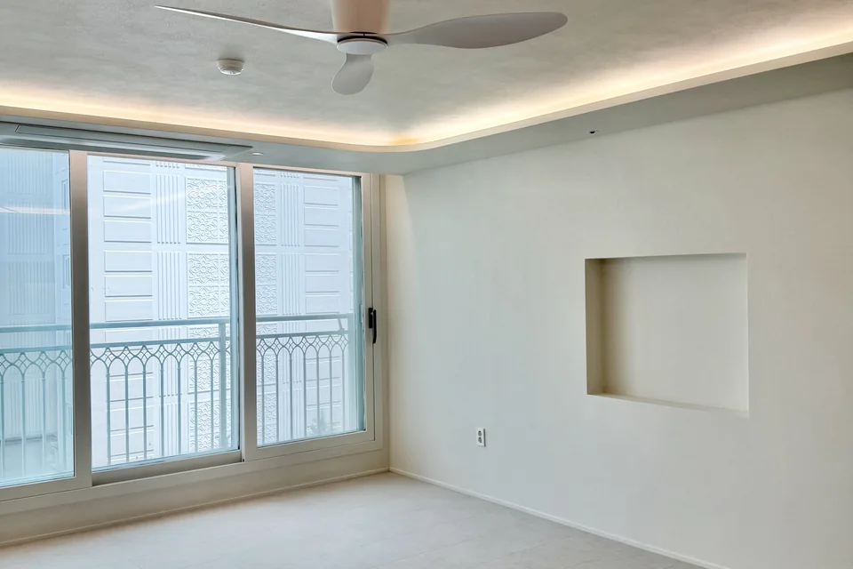
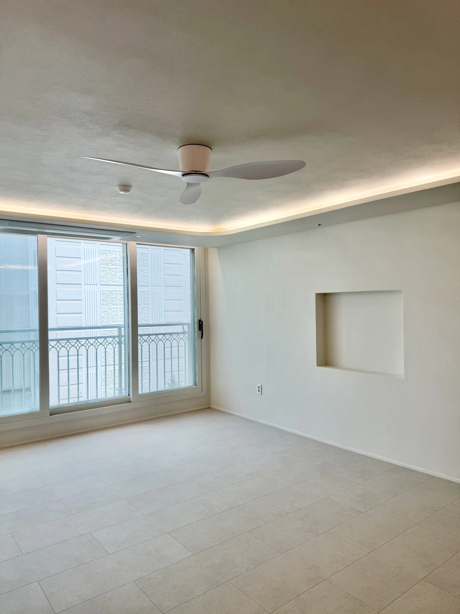
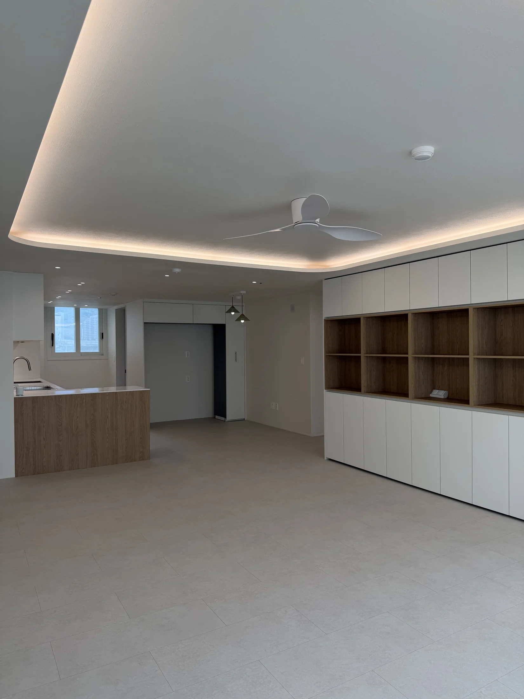
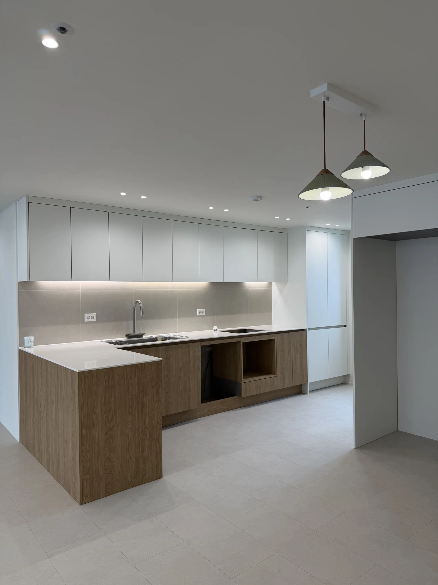
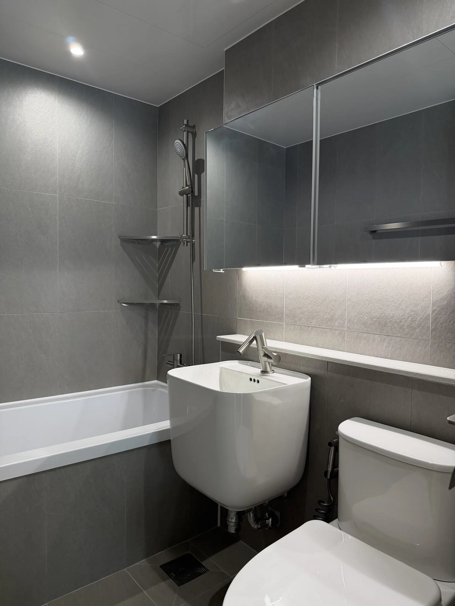

기존 상태
거실 벽과 수납, 주방과 각 방의 사용 방식을 함께 검토한 현장입니다.
설계 판단
장식보다 생활 기능이 먼저 보이도록 면과 수납의 위치를 공간별로 나눠 정리했습니다.
주요 시공
현관 수납부터 거실, 주방, 침실, 욕실과 발코니까지 전체 공간의 마감 흐름을 맞췄습니다.
완공 결과
수납은 필요한 자리에 남기고 벽과 천장은 간결하게 이어지는 35평 공간이 됐습니다.

거실 벽과 수납, 주방과 각 방의 사용 방식을 함께 검토한 현장입니다.
장식보다 생활 기능이 먼저 보이도록 면과 수납의 위치를 공간별로 나눠 정리했습니다.
현관 수납부터 거실, 주방, 침실, 욕실과 발코니까지 전체 공간의 마감 흐름을 맞췄습니다.
수납은 필요한 자리에 남기고 벽과 천장은 간결하게 이어지는 35평 공간이 됐습니다.



